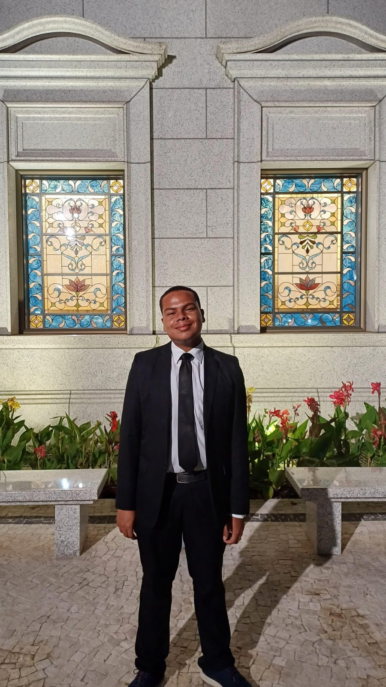

Rafael Aranha | WDD130

Hello! My name is Rafael, I was born in Pará, Brazil. I enjoy
playing piano, guitar, videogames and I really like to cook. Since when I was
a child, I loved to learn music, for that I tried to learn piano. Now, I can play
almost
every song I want!
And as Nephi, I was born by goodly parents, I have being raised in a home with so much
light! I was taught
about the Gospel of Jesus Christ even when I was a child. By the way, You can see three
of my favorites temples
here, down below!
That is not every thing: I served a mission in Natal, Brazil, from September 2023 to
September 2025. Yeah,
I came back home since some months ago! Haha!
It's a blessing for me to study here in BYU Idaho, because of BYU Pathway. Even I am
still living in my country, I can
improve the english gradually, and learn to write my own sites with a great education!